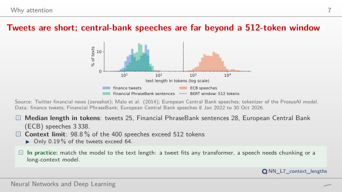
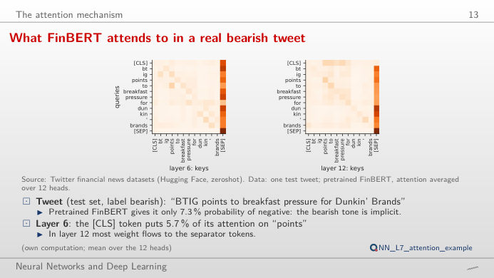
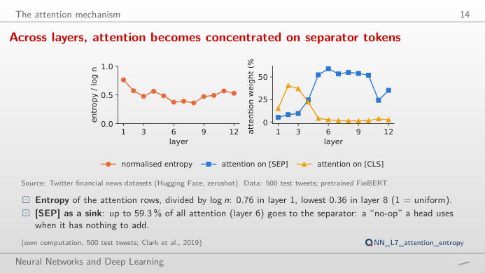
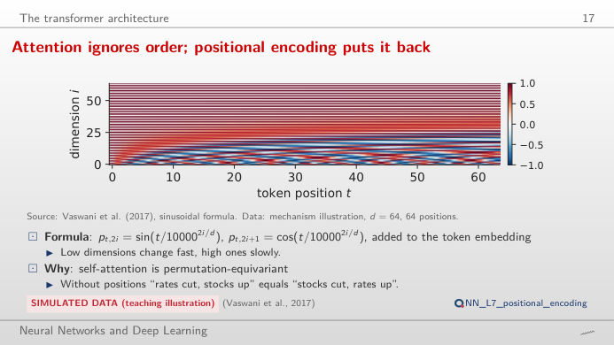
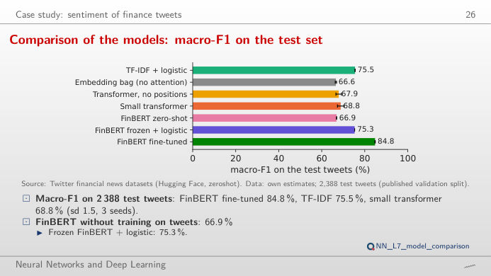
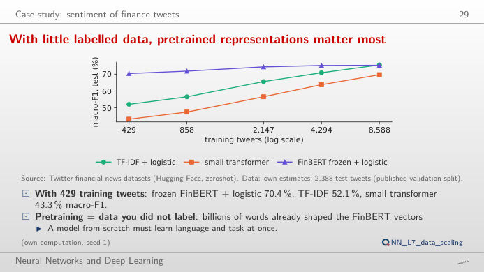

The slide of the lecture is on the left, the same figure on the right, recomputed in your browser when you move a control. The attention maps are those of the pretrained FinBERT (BERT, Bidirectional Encoder Representations from Transformers, further trained on financial text) on real test tweets; the model results are those of the case study of the lecture (2,388 test tweets, three classes: bearish, bullish, neutral). The ▶ button moves the main parameter step by step. Under each figure: a readout, a question for the room and the Quantlet with the code of the chart.
Why attention · The attention mechanism · The transformer architecture · Case study: sentiment of finance tweets
Why attention
Tweets are short; central-bank speeches are far beyond a 512-token window

Answer
Tweets (median 25 tokens, maximum 82) and Financial PhraseBank sentences (median 28) fit easily; 98.8% of the 400 ECB speeches are longer than 512 tokens (median 3,338). Self-attention compares every token with every other one, so its cost grows with n²: a median speech costs about (3,338/25)² ≈ 17,800 times a median tweet. Long documents are therefore cut into windows or read by models built for long contexts.
The attention mechanism
What FinBERT attends to in a real bearish tweet

Answer
In layer 12, [CLS] spreads its attention over “points”, “to”, “pressure” and “breakfast” (about 14–17% each); in layer 6 it puts 66% on [SEP]. Many heads park attention on [SEP] when they have nothing useful to do. FinBERT calls this tweet neutral (75%), while its label is bearish: attention weights show where information flows, not why the model decides, so they are not an explanation.
Across layers, attention becomes concentrated on separator tokens

Answer
The dot product of two 64-dimensional vectors has a spread that grows with √d_k; without the division, the softmax saturates: one token gets almost all the weight and the gradients of the others vanish. With c = 1/8 (2^−3) most rows put nearly all their weight on one token; with c = 8 they become close to uniform (entropy / log n near 1). On the 500 test tweets of the lecture, the normalised entropy falls from 0.76 in layer 1 to 0.36 in layer 8.
The transformer architecture
Sinusoidal positional encoding

Answer
Each position gets a vector of 64 sines and cosines with wavelengths from 2π to about 2π·10,000^(62/64): the first pairs change fast, the last ones slowly, like the hands of a clock. The dot product of two position vectors is largest when they are equal and falls with the distance, so nearby positions look similar. In the case study, adding positions to the small transformer raises macro-F1 by 0.9 points (95% interval 0.1 to 1.7).
Case study: sentiment of finance tweets
Comparison of the models: macro-F1 on the test set

Answer
Yes. Resampling the test tweets (paired bootstrap on the seed-1 predictions) gives a difference of about 9 points with a 95% interval of roughly 7 to 11 points that excludes zero (lecture, averaged over three seeds: 9.3, interval 7.3 to 11.3). FinBERT frozen + logistic against TF-IDF gives an interval around zero (lecture: −0.2, from −2.5 to 2.0): a large pretrained model used without fine-tuning is not automatically better.
With little labelled data, pretrained representations matter most

Answer
The frozen FinBERT with a logistic regression on top: 70.4% macro-F1 with 429 tweets, against 52.1% for TF-IDF and 43.3% for the small transformer trained from scratch. Pretraining brings knowledge of the language that the small data cannot supply. With all 8,588 tweets TF-IDF catches up (75.5% against 75.3%), and the small transformer is still behind (69.7%).
Tweets: Twitter financial news sentiment (Hugging Face, zeroshot), published validation split used as test set. Financial PhraseBank: Malo et al. (2014). Speeches: European Central Bank (ECB), 8 January 2022 to 30 October 2026. Tokens: WordPiece tokenizer of ProsusAI/finbert. Attention: ProsusAI/finbert, 12 layers × 12 heads, d_k = 64. Model results, test predictions (seed 1) and learning with less data: own estimates of the lecture (lectures/L7/results). Positional encoding: formula of Vaswani et al. (2017).